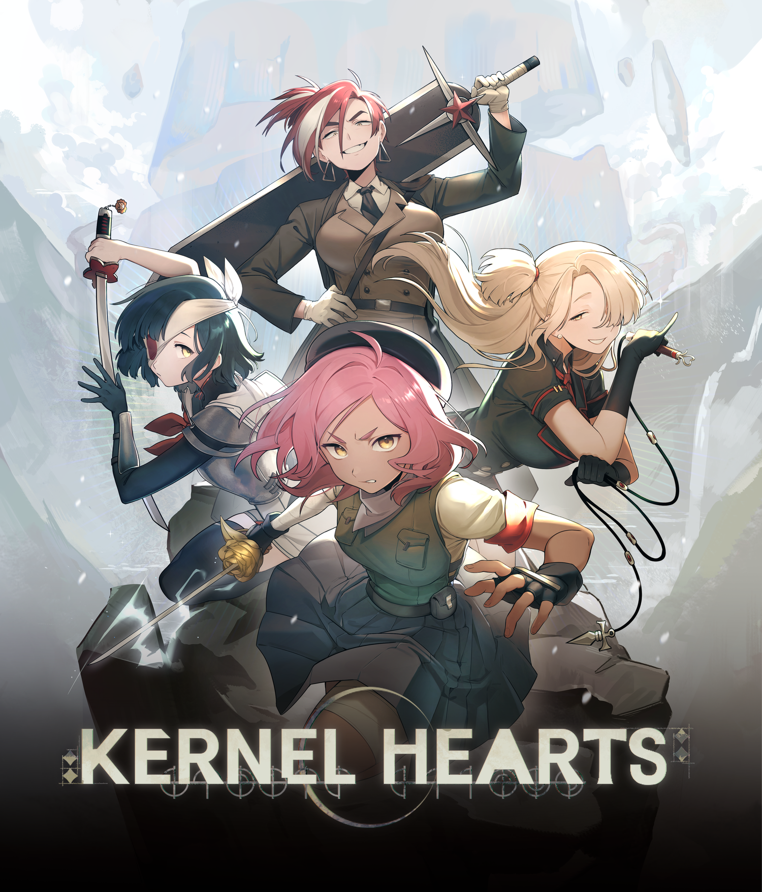
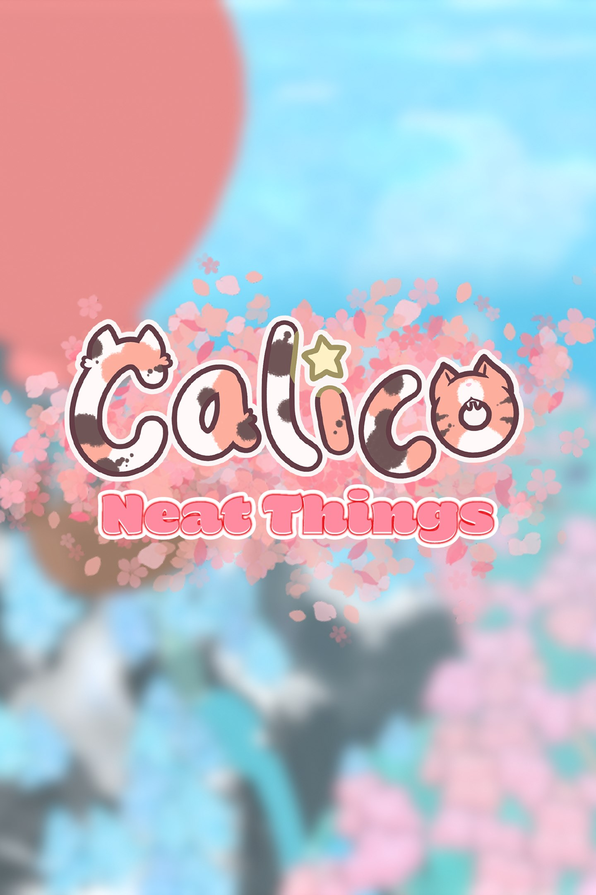
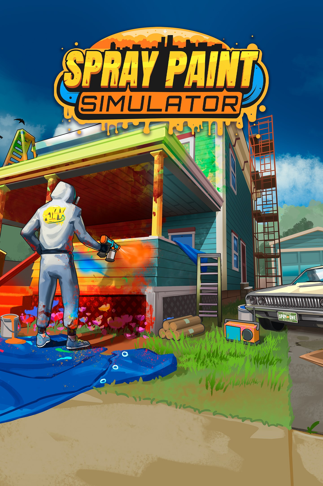
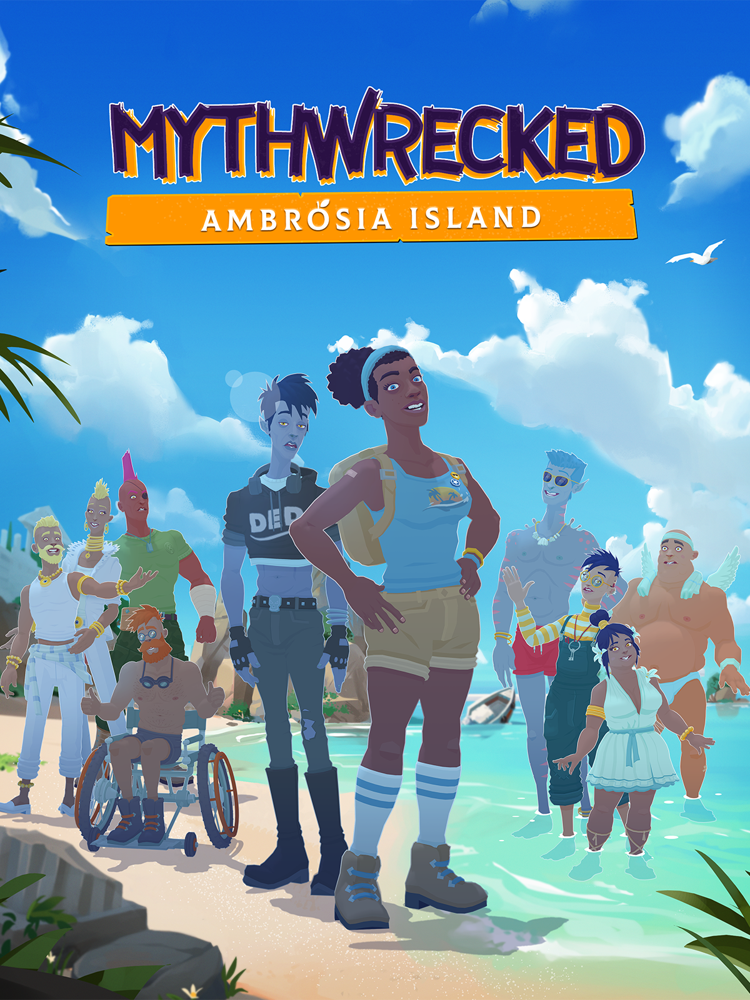
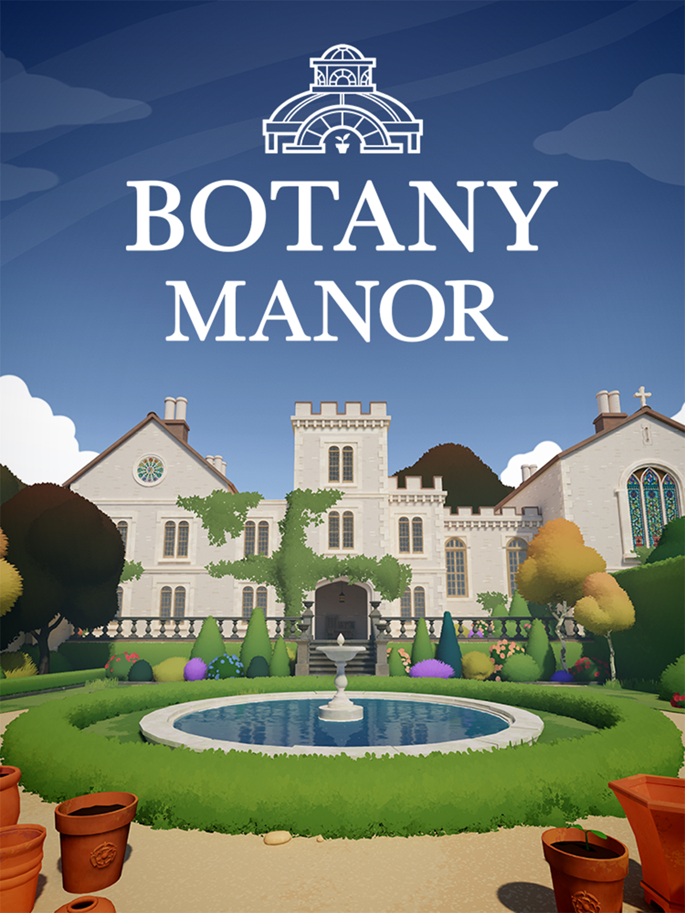
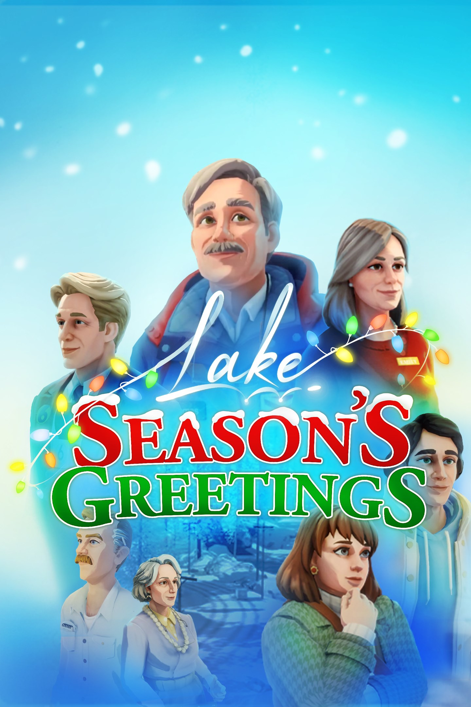
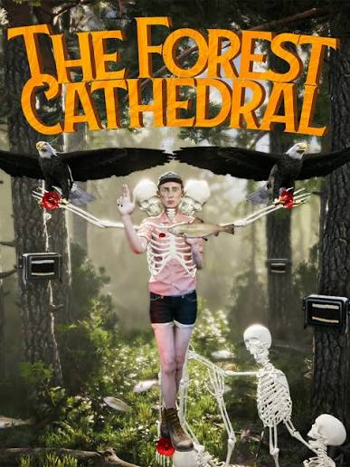
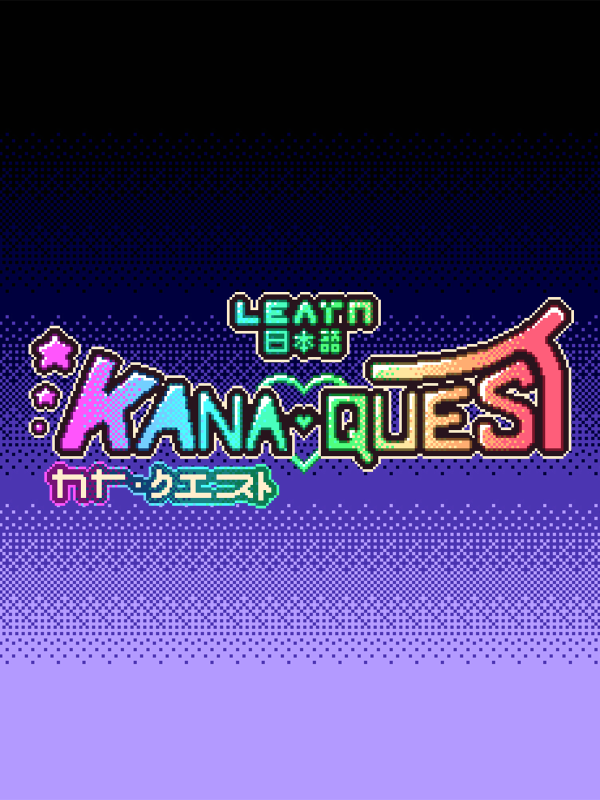
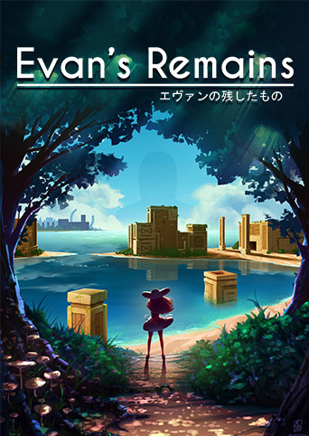
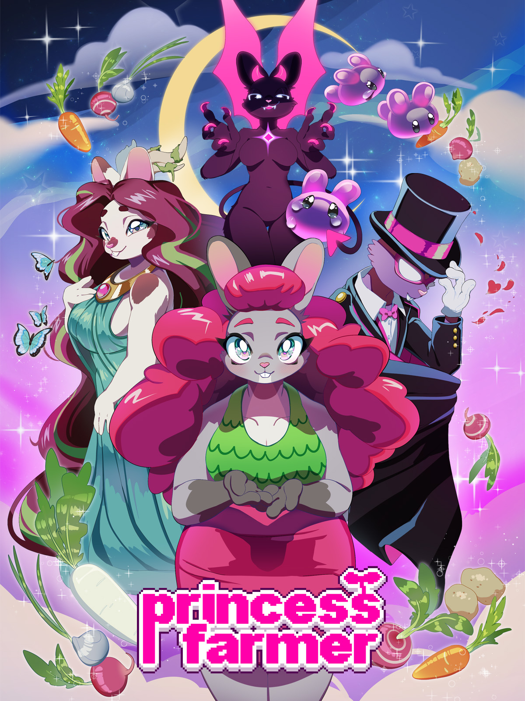

CJ Axisa
Hi, I'm CJ, an RIT graduate and former Technical Producer at Whitethorn Games. My work in technical production and cross-platform porting gave me the unique opportunity to dissect diverse game architectures, collaborate with talented teams, and tackle complex performance optimizations, my personal favorite part of engineering. Beyond porting, I bring a multidisciplinary background to my projects. I've engineered gameplay, UI, and networking systems, and have cross-functional experience in design, 3D modeling, and animation. I am deeply passionate about the complete game development pipeline and thrive on learning exactly how games are built from the ground up.
Porting
Kernel Hearts
September 2026Summary
Gather your allies. Eliminate Angels. Transform into a Magical Girl. Slay god. Kernel Hearts is a Multiplayer Co-Op Roguelike Action RPG about four magical girls and their attempt to save a world that's drowning in ashes.
My Role

Calico - Neat Things DLC
March 2026Summary
There's even more to explore in the world of Calico with the Neat Things DLC, including: New quests, a new character, new mini-games, and, of course, cuddly new friends to invite to your cafe!
My Role

Spray Paint Simulator
May 2025Summary
Bring color to the world in Spray Paint Simulator! Restore worn-out surfaces with a fresh coat of paint and watch them come back to life. Use your spray tool with precision, cover every inch, and enjoy the satisfaction of a flawless finish.
My Role

Slime Heroes
March 2025Summary
Play as the last slime tasked with saving their home in this cute 3D action-adventure slimes-like! Customize your slime, play alone or with a friend, collect weapons and gear, battle challenging enemies and bosses, gain skills, and combine them to create your own abilities to suit your playstyle!
My Role

Mythwrecked: Ambrosia Island
December 2024Summary
You’re shipwrecked on a lost mythical island. As backpacker Alex, you must befriend the forgotten gods of Greek mythology and restore their memories. Explore the dynamic island and its story sandbox to build new friendships, solve the mystery and save the gods.
My Role

Botany Manor
April 2024Summary
Welcome to Botany Manor, a stately home in 19th century England. You play as inhabitant Arabella Greene, a retired botanist. Explore your house and gardens, filled with research, to figure out the ideal habitat of forgotten flora. Grow each plant to discover the mysterious qualities they hold…
My Role

Lake: Season's Greeting
November 2023Summary
Season's Greetings is a Christmas-themed prequel DLC to 2021's Lake.
My Role

The Forest Cathedral
November 2023Summary
The Forest Cathedral is a first-person environmental thriller set on a remote island. Playing as scientist Rachel Carson, players will slowly uncover the effects of DDT by using advanced environmental technology to solve 2D/3D connected puzzles in this dramatic reimagining of Silent Spring.
My Role

Kana Quest
March 2023Summary
A Kawaii Kana Match-Em Up. Learn Japanese. Match Kana (Japanese letters) with their sounds. Solve Puzzles.Your quest to learn Japanese starts now!
My Role
- Ported the game to Nintendo Switch, implementing platform-specific features and optimizations.
- Optimized game performance to a 60 FPS target.
- Fixed bugs from the original Steam release, improving stability and user experience.

Evan's Remains
January 2023Summary
Years after a boy genius named Evan disappears, a bizarre letter arrives. Evan wants a girl named Dysis to come find him. As Dysis, you’ll need to solve an intricate series of puzzles to unravel the entire mystery—and bring Evan home.
My Role
- Ported the game to GX Games, implementing platform-specific features and optimizations.
- Optimized game performance to a 60 FPS target.
- Fixed visual effects to work in WebGL rendering context.
- Compressed game assets to reduce loading times and fit within platform constraints.
- Developed for simultaneous release with Princess Farmer.

Princess Farmer
January 2023Summary
Be the magical bunny farmer you've always wanted to be! Princess Farmer is a charming visual-novel meets match-3 gameplay, with a host of adorable characters to befriend, mysteries to solve, and fashion to collect. Smash rocks! Make combos! Win hearts!
My Role
- Ported the game to GX Games, implementing platform-specific features and optimizations.
- Optimized game performance to a 60 FPS target.
- Fixed visual effects to work in WebGL rendering context.
- Compressed game assets to reduce loading times and fit within platform constraints.
- Developed for simultaneous release with Evan's Remains.

Projects
Loche's Walk
This 2D platformer tells the story of Loche, a magician using his words to meet new friends and defeat enemies. Players speak into their microphone to activate different abilities. This game was developed by a team of Whitethorn employees over the course of a week as a part of the Whitethorn Winter Jam of 2023. There was 1 writer, 1 designer, 1 artist, sound designer and 2 engineers (including myself). The jam's theme was 'Communication' so we interpreted that as a way the player communicates with the game itself, complimented by a story about a character desperate to communicate with others and make new friends. Getting the game's speech recognition to work somewhat consistently was a huge challenge, that I'm happy to have gone through and learned from
PunchDown VR
Punchdown is a VR parkour game in which the player punches the ground and walls to launch themselves and traverse through levels. For this project I work as a programmer, a level designer, and a 3D modeler. This game started as a game jam entry for the 2018's Global Game Jam. From there, myself and two other RIT students decided to continue development on our project and with the guidance of our professor, Elouise Oyzon. She guided us to help complete the project, linking our group up with a 4th member of the team, our composer and sound designer while also helping us to make the game more accessible. When we released the project to the public, our team was recognized for our efforts by our college, receiving the Excellence in Innovation award. "We felt that PunchDown best exemplified the spirit of the innovation category — games that go a bit off the edge of the conceptual map and then build an experience around it.” - Ian Schreiber, Assistant Professor at RIT and co-founder of the Global Game Jam.
Seal Slide
This game was developed over the course of a week as a part of the One Button Game Jam by myself and Monica Phadnis. This jam challenged us to make a game playable with just one button. We created a game that was equal parts pinball and infinite runner. The game stars a seal named Joe who finds himself rolling down a steep hill. Players use one button to control flippers to hit Joe out of the way of obstacles!
Dark Days Ahead
This game was developed over the course of 6 weeks as a project for a Game Design & Development II class. Dark Days Ahead is what we described as a bullet-hell horror game drenched with existential terror. The player plays as a ball of light attempting to survive in a world of darkness. The world is procedurally generated. The player has a dash/dodge move that consumes some of their health. The core gameplay is trying to avoid enemies while maintaining as much health as possible. Throughout their struggle, the player is shown bleak messages of the horror that exists for them.
Experience
Whitethorn Games
- Collaborated directly with developers to port several PC games to consoles, including Nintendo Switch, Nintendo Switch 2, XBOX One & Series X | S, PlayStation 4 & 5
- Integrated platform-specific features and optimizations for each console.
- Optimized performance and resolved technical issues for console releases, increasing performance to match our internal guidlines for platform framerates
- Worked with Platform Partner and internal marketing team to get featured placement of Botany Manor in the XBOX Store.
- Provided support for PC releases on platforms like Microsoft Store, Epic Games Store, Steam and GX.games.
Digital Continue
- Programmed for an unreleased Unity WebGL game built from the codebase of two previous projects of the company’s.
- Expanded the project’s user customization engine to allow players to further customize their games.
- Worked directly with the designer to upgrade and update the existing mechanics and systems.
- Created and maintained servers and database to host player creations and review on another’s creations.
- Worked directly with an art-team to fully overhaul the UI / UX.
MARCUS Literacy Project
- Programmed for a prototype of a video game aimed at helping 4th -8th grade children struggling learn how to read.
- As one of two programmers, created a prototype in Unity that won 2nd place in TechRise Chicago’s pitch competition, granting $10,000 for the project.
- Worked directly with designers, artists, and educators to tweak the prototype based on their feedback.
iD Tech Camps
- Ran virtual classes for kids, teaching various classes including topics like: Roblox game creation, 3D Game Development in Unity, JavaScript Game development and Python.
- Distilled complex programming concepts and game engine intricacies to 6-16 year olds.
- Develop, archive, and improve class curriculum.
Funkitron
- Started as a paid internship with the mobile game company, Funkitron where I designed levels, gave feedback, scripted narrative sequences, and pitched gameplay mechanics for their title, Relic Chasers.
- After the internship period ended, I began working part-time in a QA/Level balancer position where I played new levels designed for the game and advised how levels should be adjusted to fit the game's intended difficulty curve.
- Researched and wrote about popular mobile games to study what made them successful for internal company use.
Skills
- C#
- C / C++
- HTML & CSS
- JavaScript
- Java
- Lua
- Python
- SQL
- GameMaker Language
- GDScript (Godot engine language)
- GLSL (OpenGL Shading Language)
- Git / GitHub
- Perforce
- AWS (Lambda, S3)
- Jira
- Sharepoint
- MongoDB
- Unity
- Unreal Engine
- Godot
- GameMaker Studio 2
- Roblox
- GameMaker Studio 2 & GameMaker Language
- Pico-8
- QA
- Agile Development & Scrum
- A11y / Accessibility
- Networking
- Shader Programming
- Repo Management
- Communication